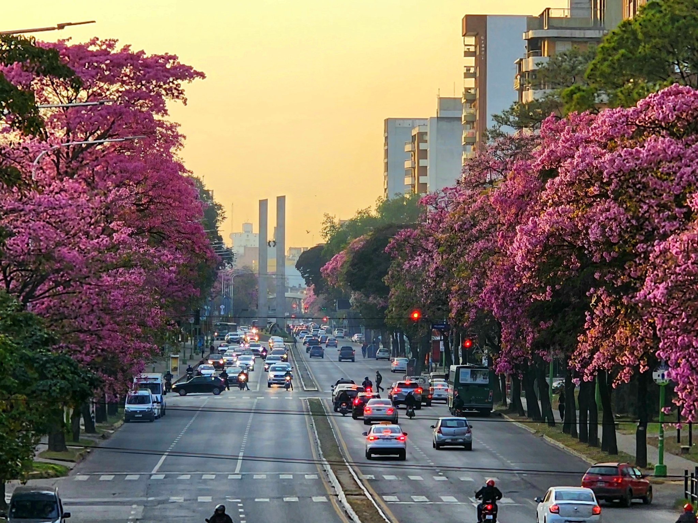

San Miguel de Tucumán, a veces llamada simplemente Tucumán, es la capital de la provincia de Tucumán, situada en el noroeste de la República Argentina, a 1311 km de la ciudad de Buenos Aires. Está ubicada muy cerca de la orilla derecha del río Salí, también llamado río Dulce. El Jardín de la República y Cuna de la Independencia Argentina, son sus apodos más conocidos. Es conocida como la Capital del Norte, por ser la ciudad más desarrollada y poblada de esta región. Es la quinta mayor ciudad de Argentina, después de Buenos Aires, Córdoba, Rosario, y Mendoza. Es además la ciudad más importante de la región del Norte Grande Argentino. Su crecimiento ha superado los límites originales, llevándola a ocupar territorios de los departamentos circundantes en todas las direcciones, dando así origen a la conurbación del Gran San Miguel de Tucumán, la cual se sitúa, conforme al censo del año 2010, como la quinta urbe de mayor tamaño del país. Su importancia histórica se debe, principalmente, a que fue en esta ciudad donde se produjo la Declaración de Independencia de la Argentina, el día 9 de julio de 1816. Es por eso que, desde el año 1991, por decreto n.º 81 del Poder Ejecutivo Nacional, los días 8 y 9 de julio de cada año, la ciudad de San Miguel de Tucumán se convierte simbólicamente en la capital del país.
